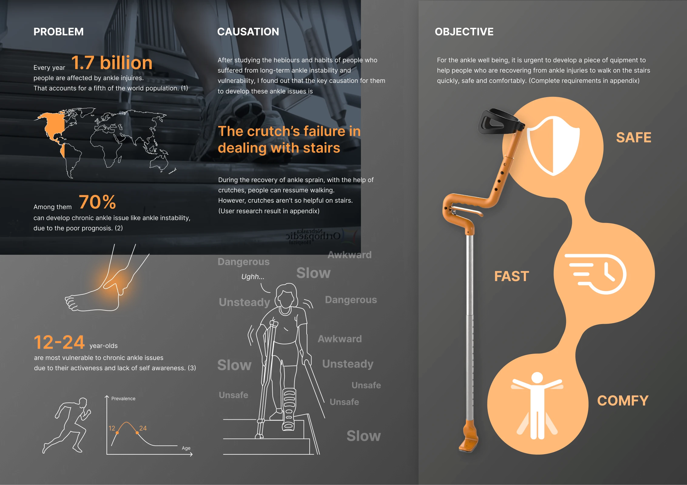
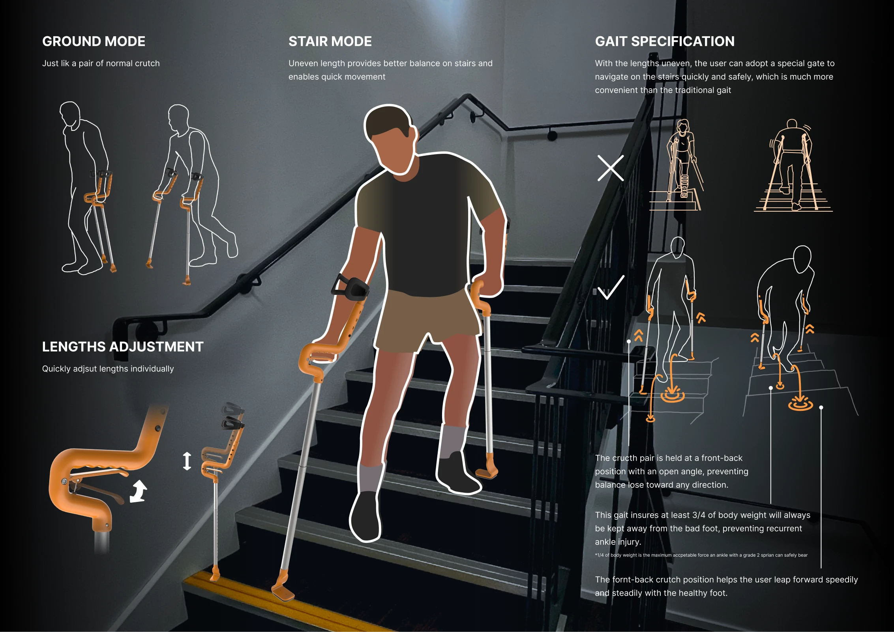
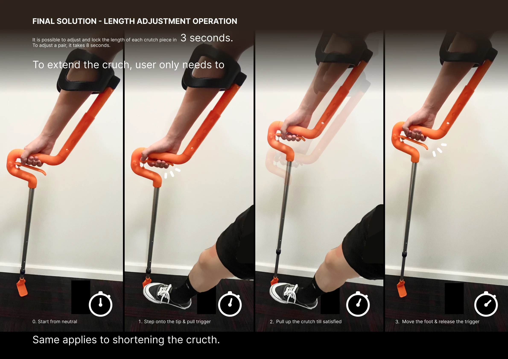
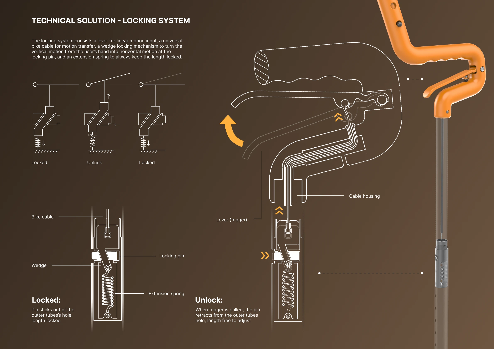
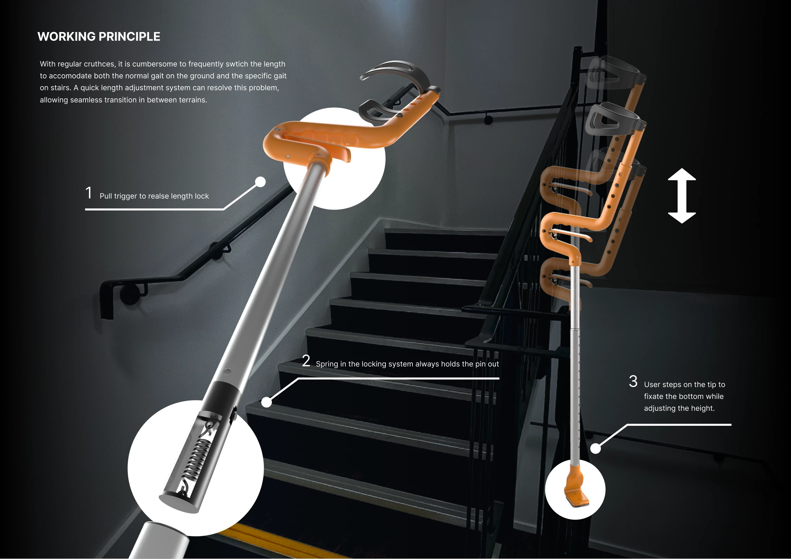
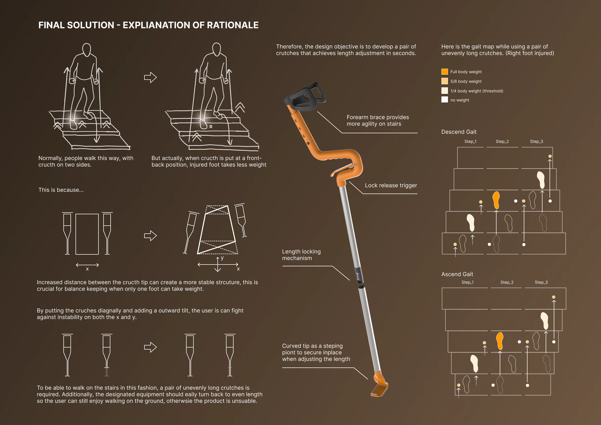
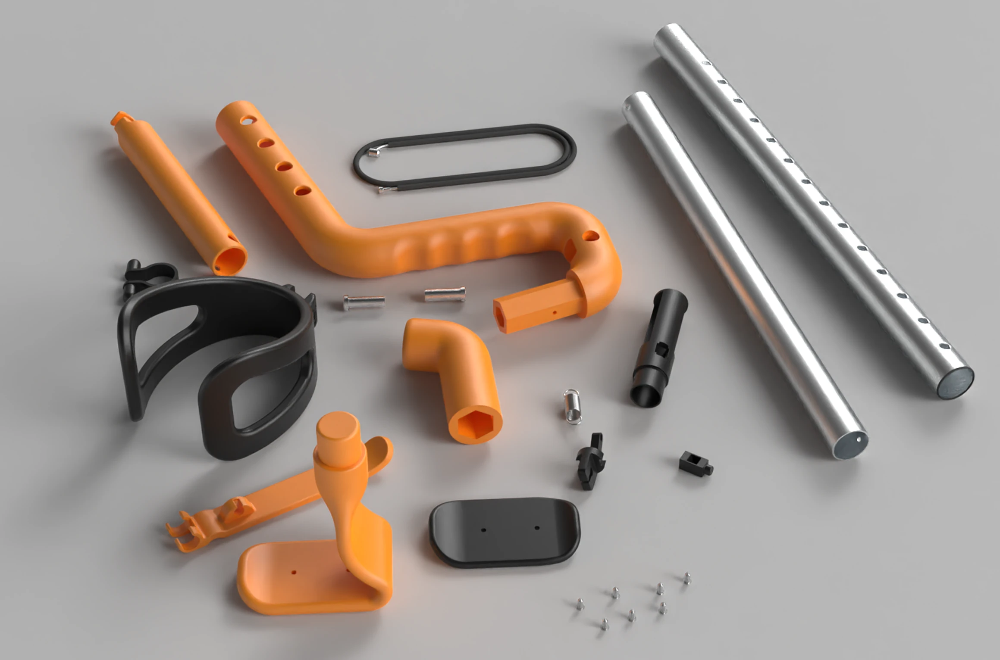
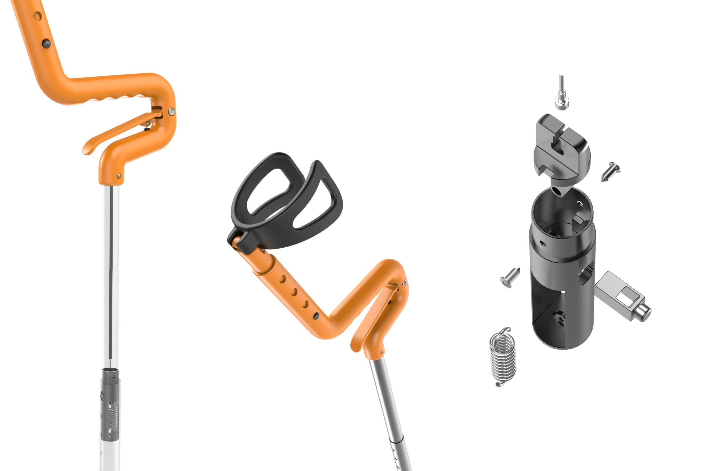
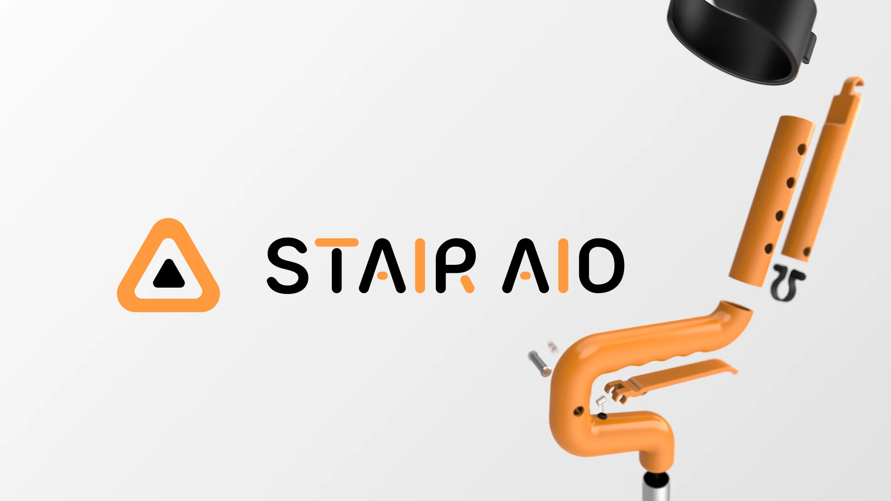
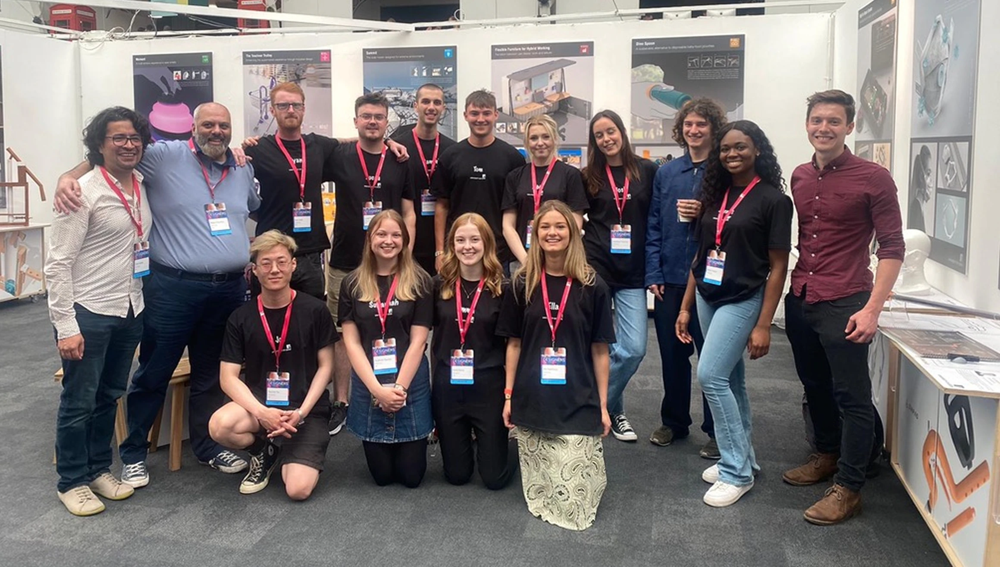

2023
Help injured users move on stairs without stopping to rebuild the crutch
StairAid is an assistive mobility concept for people with temporary lower-limb injuries. I designed the product direction, mechanical adjustment principle, visual prototype, and testing narrative as a 12-week industrial design project.
The goal was to make stair movement feel less fragile by letting the crutch change length quickly when the ground condition changed.

Problem statement
Because standard crutches are designed around flat-ground walking, injured users have to pause, compensate, or use the wrong support length on stairs, which makes an already risky movement slower and less stable.

1 — Reframe the crutch around stair gait
The first useful insight was that stairs change the job of a crutch. On flat ground, matched crutch lengths support a regular rhythm. On stairs, the user needs one support point higher and one lower to hold a safer front-back stance.
I treated uneven crutch length as the product's core interaction rather than a secondary adjustment. The design had to support a clear transition between flat mode and stair mode.
From a product perspective, this made the brief smaller and stronger. The concept was not trying to make a universal mobility aid; it was solving the moment where standard crutches feel least adapted to the environment.

2 — Make adjustment quick enough to use in real movement
Manual length adjustment created the next problem. Even if uneven lengths improved the stair stance, stopping mid-transition to adjust pins by hand would make the behaviour feel too slow and awkward for everyday use.
I designed a one-handed trigger interaction so users could release, change, and lock the crutch length in seconds. The important design decision was confidence: the product needed to feel fast when changing length and secure when supporting weight.
From a usability perspective, speed was not only about saving time. It reduced the chance that users would avoid the safer mode because switching modes felt like too much effort.

3 — Hide mechanical complexity inside a cleaner product form
The mechanism moved through visible external locking ideas before settling into an internal solution. Exposed parts made the principle easier to explain, but they also made the product feel fragile and overcomplicated.
I moved the release system inside the tube and used a lever, bike cable, wedge, spring, and locking pin principle to translate a hand trigger into length release. The default state stayed locked; the trigger only released adjustment when needed.
From a design perspective, this protected both trust and manufacturability. Users should not have to read the mechanism to believe the crutch is stable.


4 — Shape the details around active stair movement
The surrounding product details followed the same stair-use logic. The curved tip gives a more useful contact angle during diagonal support, while the forearm brace supports more active weight shifts than an armpit crutch.
I used exploded views and component breakdowns to test whether the product story was understandable beyond the final render. The aim was to show how the mechanism, handle, tube, pin, brace, and tip worked as one mobility system.
From a presentation perspective, these drawings made the concept easier to critique: people could inspect the relationship between the ergonomic promise and the mechanical proposal.



Delivery and results
The final concept combined a stair-specific gait strategy with a quick-adjustment crutch mechanism, product renderings, exploded views, and an exhibition presentation. It showed a validated direction rather than a finished medical device.
The observed stair trial suggested that uneven crutch length could reduce stair descent time from 8 seconds to 6 seconds, but the more important finding was behavioural: the adjustment had to feel fast enough that users would actually use it.


So what?
StairAid mattered because it treated mobility support as an interaction problem, not only a structural object. The key design question was not whether a crutch can extend; it was whether the user can change support mode at the exact moment the environment changes.
If the project continued, I would test longer-term comfort, repeated locking reliability, wet-step behaviour, and whether first-time users understand stair mode without coaching.